伸び続ける浄水型ウォーターサーバー
前年比で明確。新規も乗り換えも、今選ばれているのは浄水型です。
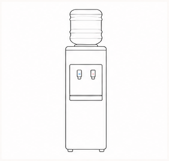
宅配水型
468万台
前年比 99.7%
統計が公表されて以来はじめての純減
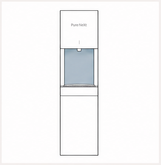
浄水型
126万台
前年比 +23.4%
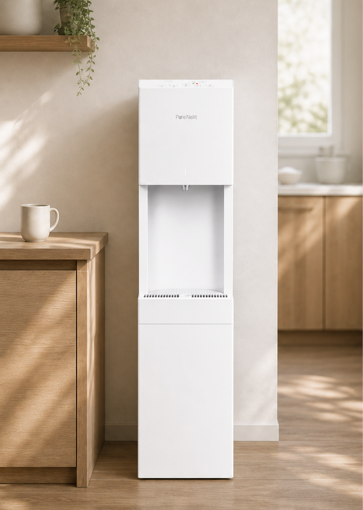
浄水型ウォーターサーバー
販売パートナー向け
製品仕様と機能を、販売にたずさわる皆さまにご確認いただくための資料です。
浄水型ウォーターサーバー PureNext ／ 型番 PNX-01-ST
前年比で明確。新規も乗り換えも、今選ばれているのは浄水型です。

宅配水型
468万台
前年比 99.7%
統計が公表されて以来はじめての純減

浄水型
126万台
前年比 +23.4%
まだ全国で12.3%の普及率。新規のご契約の余白が大きく残っています。
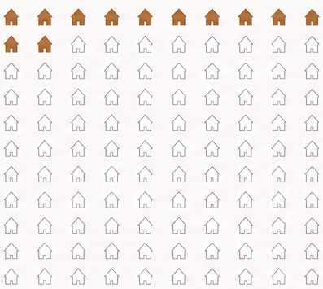
普及率
12.3%
契約台数
約600万台
宅配水型
浄水型
出典：JDSA 業界統計 2025年度／JDSA 水分補給に関するアンケート結果 2025年（n=1,800）
宅配水型をお使いのお客様には、乗り換えたくなる理由がそろっています。
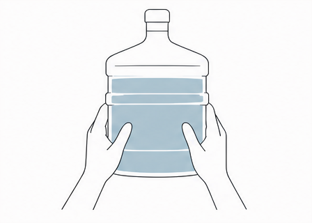
12Lのボトルは約12kg。胸の高さまで持ち上げて交換します。
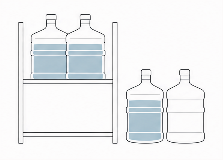
毎月届くボトルの置き場所と、空ボトルの回収待ちが必要です。
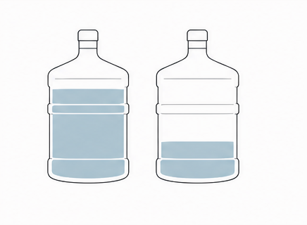
飲む量が多いと足りなくなり、少ないと余ってしまいます。料理に使うといった気軽な使い方ができません。
安くなって、飲み放題に。料理にもお湯にも、使える用途が広がります。
どこも税抜で3,000円台後半です
宅配水型の月額（24Lあたり・税抜）
| プレミアムウォーター | 3,809円〜 |
| コスモウォーター | 3,800円 |
| アクアクララ | 3,946円〜 |
各社公式サイト 2026年9月時点・代表プラン・税込表示は1.1で割った税抜換算の目安・サーバー代を除く
PureNext なら
3,300円税抜
税込3,630円
月額定額で飲み放題
3,000円台後半の宅配水型より、月額が下がります。
量を気にせず、無制限に飲めます。
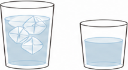
料理に、スープやコーヒーのお湯に。水を"使う"場面が広がります。
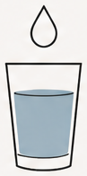
はじめてウォーターサーバーを持つお客様の、ご契約のきっかけです。
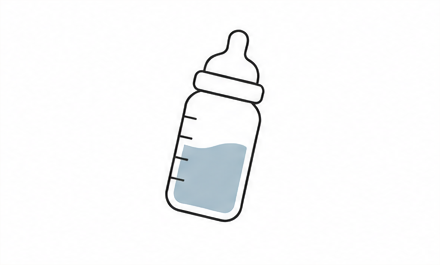
必要なときに、すぐ温水をお使いいただけます。
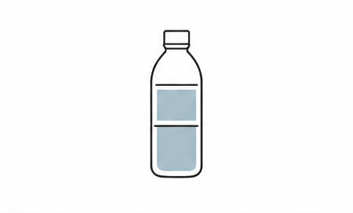
水筒に入れる冷水を、量を決めてご用意いただけます。
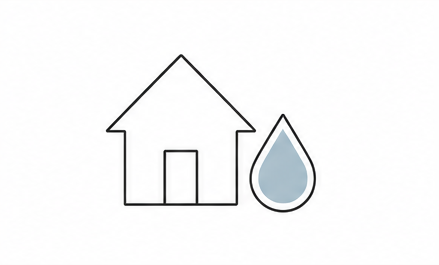
衛生的で安全な水が飲めるようになります。
など、様々な魅力があります。
他の浄水型と比べたときの特徴は、次の3点です。
5つの温度
冷水・温水・常温水・白湯・40℃をボタン1つで。
10ml単位で指定
100ml〜1,000mlを、5つのモードすべてで。
99.9%殺菌効果
出てくる直前の水までしっかり清潔に。徹底した衛生管理。
測る、押し続ける、待つ。ぜんぶ、いらなくなります。
他社の浄水型は、120ml・200mlなど決められた量だけ。
10ml刻みで出せることで、毎日の給水が圧倒的に便利になります。
250ml
100ml1,000ml
100ml〜1,000mlの範囲を、10ml単位で指定。この後ご紹介するすべてのモードで使えます。
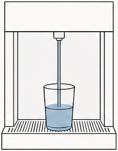
決めた量をセットしてワンプッシュ。手放しで自動取水。
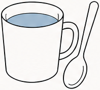
スープもコーヒーも、計量の手間なく同じ味に。
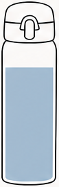
水筒への給水も、500mlと設定するだけ。
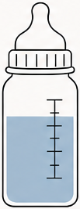
目盛りを合わせてお湯を入れる手間から解放されます。冷水で調乳する方は、その後の冷水も指定量で出せて楽です。
取水量には±数％の誤差があります。
500mlのペットボトルに500mlを注ぐとあふれることがあるため、容器には少し少なめの設定が安全です。
厚生労働省が推奨する調乳の手順は、こちらをご参照ください。
厚生労働省ホームページ（乳児用調製粉乳の安全な調乳） www.mhlw.go.jp
温水・冷水・常温水・白湯・40℃モード。いま市場でニーズが伸びている白湯が、ワンタッチで出ます。
出水温度は85℃前後です。
安全のため出水ロックつき。『温水ロック解除』を2秒長押しで解除できます。
解除後は、長押しの自由量と、指定量の両方で出せます。
冷水（約6℃）と常温水は、ロック解除なしでそのまま出せます。
夜寝る前の水分補給や、体を冷やしたくない健康志向で、常温水の需要が急速に高まっています。
いつでも飲める綺麗な常温の水は、意外と貴重です。
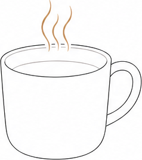
コンビニや自動販売機で白湯の販売が増え、『サユナー』という言葉も生まれるほど、白湯の需要が高まっています。
その白湯が、PureNextならボタン1つ。温度は55〜60℃で出ます。
浄水型で白湯が出る機種は、ごくわずかです。
白湯を飲む方は、毎朝同じ量を飲まれる方が多いです。量を指定してワンタッチすれば、あとは手放しで取水できます。
楽だから、続く。白湯の習慣をつけやすいウォーターサーバーです。
150ml
粉末を溶かしたあと、40℃にぬるくするためのモードです。量を決めて押すだけで、温水と冷水を一度ずつ取水し、指定した量の40℃に仕上がります。
150ml
1
量を指定する
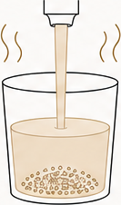
2
温水が出る
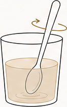
3
粉末を溶かす
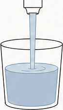
4
冷水が出る
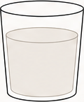
5
指定量の40℃が出来上がる
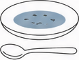
猫舌のお子さまに、スープをぬるめに作るとき
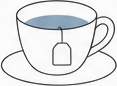
リラックスしたいときの、ぬるめのハーブティー
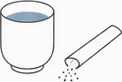
粉末のスープや緑茶を、すぐ飲める温度で
設定した量が、そのまま出来上がりの量です。
粉が液体になる量まで計算して、出来上がり量はその量になります。
例えば、20gの粉を入れて150mlを作る場合、粉は溶けて16ml前後の液体となるので、残りの134mlをお湯と水で作る仕組みです。
温度は±数％のブレが発生します。
前回の量を覚えているので、いつもの量で入れやすい。
各モードのすべてのボタンにメモリ機能があり、そのモードで前回何ml出したかが記録されています。
たとえば前回、白湯を150mlで出したなら、次に白湯モードでロックを解除してプラスボタンを1回押すと、表示は150mlから始まります。
毎日決まった量を習慣にしている方ほど、同じ数字がすぐ立ち上がるので便利です。
ボタンごとに、前回の量が別々に記録されています（数値は例）。
※ 冷水と常温水は共通のメモリです。
99.9%殺菌。出口の清潔まで設計しています。
徹底した出水口での殺菌で、徹底した安全な水の提供を。
温水タンクと冷水タンクには、除菌された水が入ってきます。
温水タンクは90℃、冷水タンクは約6℃。どちらも菌が繁殖しにくい環境です。
なので、タンクの中は心配が少ないです。
空気中の菌・手指・水はねで菌が入りやすく、残る水は常温のため、繁殖しやすい場所です。
本当にきれいな水を出すために、いちばん殺菌が必要なのがこの出水口です。
バイオフィルムとは
浴室の床や三角コーナーのぬめりと同じもの。菌が自分を守るために作る、ぬるぬるの膜です。
この3ステップで、バイオフィルムを形成します。
浮遊
水の中にバラバラに浮いている
付着
壁にくっつき、仲間を増やす
膜を作る
ぬるぬるの膜で身を守る
浮遊状態と比べた死ににくさ
1,000倍
膜になると、浮遊状態に比べて1,000倍死ににくくなるといわれ、厄介です。
膜が作られると、水を出すたびに膜が剥がれ落ちて水に混ざり、衛生面や味・品質の劣化の懸念を生みます。
管の内側の膜が剥がれ、コップへ流れ出る
だから、浮遊や付着の段階で殺菌することが重要です。
壁に付着してバイオフィルムを形成する前に殺菌します。
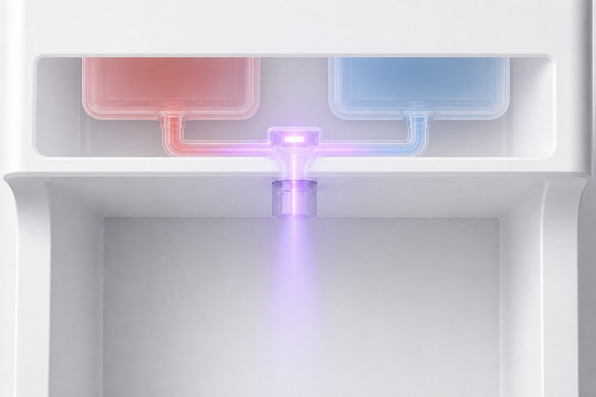
99.9%
緑膿菌をはじめとする一般細菌に対する殺菌効果
出典：第三者試験機関による出水口の殺菌試験成績書
日々の「お悩み」と「こうだったら」の声を、細かな部分まで形にしました。
水流を整えて、出水口も本体も汚しにくい。
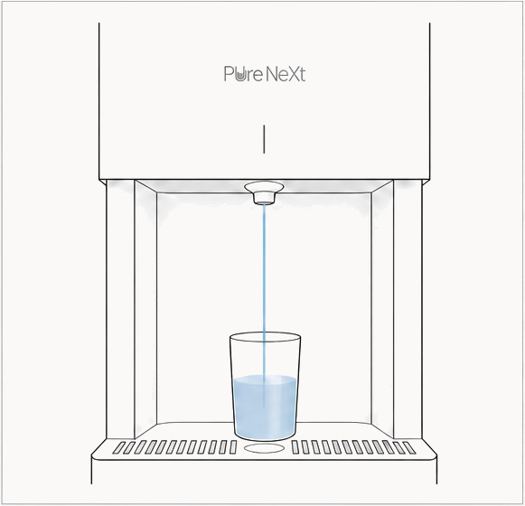
出水口の部分で水流を整えることで、水はねしにくい構造にしています。
水はねによる出水口の汚染が起こりにくい構造で、ウォーターサーバー自体も汚しにくく、手を離した自動出水でも安心です。
500mlも2Lも鍋も。置いたまま指定量で給水できます。
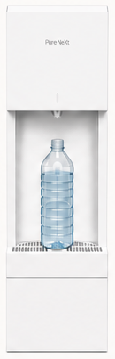
01
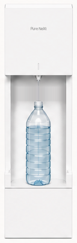
02
ペットボトルや水筒を縦に置いたまま、指定量出水で楽に給水できます。
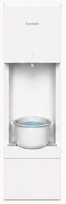
03
鍋や炊飯器のお釜を置いた状態で、指定量の取水も行え、便利です。
チャイルドロックで安心
すべてのボタンをロックできて、小さなお子さまの誤操作を防ぎます。
ロック中は温水も出ません。
＋と−の同時2秒押しで、ロックも解除もできます。
電気代も、お子さまの安全も。毎日の暮らしに合わせて選べます。
エコモードに設定すると、温水の温度を下げて消費電力を抑え、毎日の電気代をおさえられます。
温水 85℃前後
エコモード中70℃前後
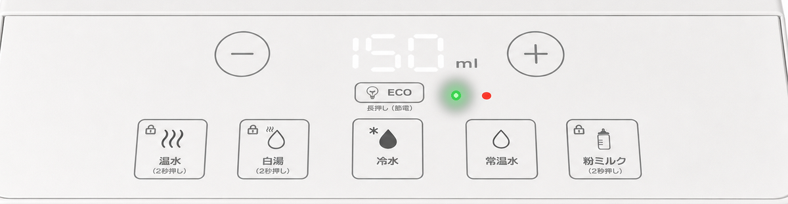
エコモード中は温水がぬるくなります。
熱いお湯が必要なときは解除してお使いください（戻るまで20分ほど）。
インテリアに馴染むための、こだわりのカラーリング。
色はクラウドダンサーを採用。わずかに温かみを含んだ上質な白です。
Pantone Color of the Year に選ばれた、史上初の白。
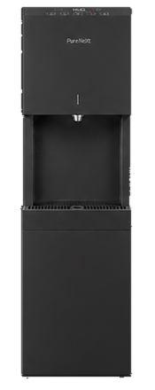
光沢をおさえたマット仕上げ。
指紋が目立ちにくく、落ち着いた印象です。
出典：Pantone Color of the Year
Pantone が Color of the Year に白系の色を選んだのは史上初。その色を採用しています。
色彩の国際的な基準を定める Pantone が、2026年のカラー・オブ・ザ・イヤーに選んだ白系の色が、クラウドダンサーです。白系の色が選ばれたのは史上初めてです。
温かみと冷たさの両方のニュアンスを持つ、柔らかく軽やかな白。家電なのに家電感がなく、空間に溶け込みます。
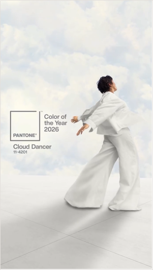
冷たくも無機質でもない、ふんわりとしたバランスの取れた白。木・陶器・リネンと調和し、置いてあっても主張しません。
出典：Pantone「Color of the Year」発表資料の説明をもとに要約
4点とも不具合ではなく仕組み上のもの。ご契約時にお伝えください。
タンクに常温の水が入ってくるためです。少し時間をおくと戻ります。
温度が安定しないためです。温水ロックランプが点滅してお知らせし、戻るとお使いいただけます。
温度にも数%のブレがあります。容器に注ぐときは、少なめの設定が安全です。
温水が70℃前後まで下がります。熱いお湯が必要なときはエコモードを解除してください。戻るまで20分ほどかかります。
設置のご相談やお客様からのご質問の際に、この一覧をご参照ください。
高さ
1,200mm
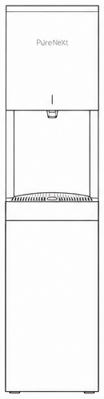
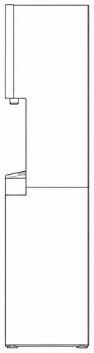
| 外形寸法 | 高さ1,200mm・幅280mm・奥行370mm |
|---|---|
| 重量 | 21.0kg（浄水カートリッジを含む） |
| 冷水の温度 | 約6℃ |
| 温水の温度 | 出水85℃前後 |
| 白湯の温度 | 55〜60℃ |
| タンク容量 | 給水4L・冷水2.0L・温水1.7L・サブ1L |
| 定格消費電力 | 冷却80W・加熱350W |
出水口だけでなく、常温水をためるサブタンクの中も、同じUVで殺菌します。
| 給水タンク | 4L |
|---|---|
| サブタンク（常温） | 1L |
| 温水タンク | 1.7L |
| 冷水タンク | 2.0L |
給水タンクの水は、3日に1回使い切るようにしましょう。
UV殺菌LEDは2か所。出水口の直前と、1Lのサブタンクにも同じUV殺菌LEDが付いています。
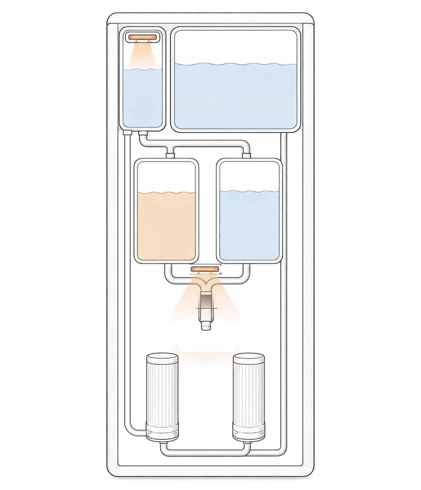
設置面はA3用紙より小さく収まります。
| フィルター交換 | カーボン系6ヶ月・ナノ系1年（年3個・無料） |
|---|---|
| 型番 | PNX-01-ST |
| 月額 |
税抜3,300円 税込3,630円 |
設置スペース
ウォーターサーバーを契約するだけで日用品が安く買えるようになるのも、
他社のウォーターサーバーより当社を選ぶ一つの理由になります。
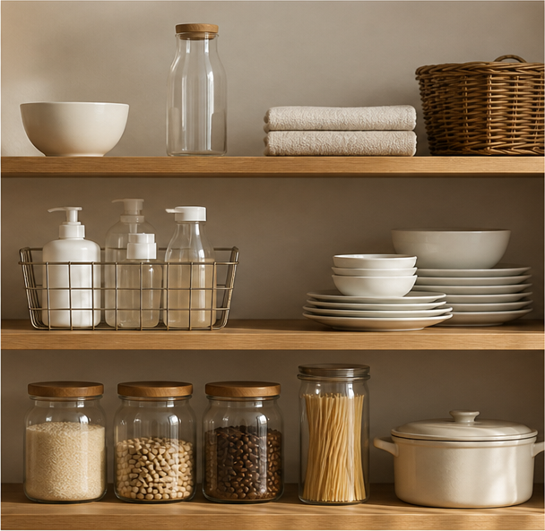
PureNextをご契約いただくと、
YASUNEモールをお使いいただけます。
日用品・食料品・美容品など、AmazonやRakutenで
お買い求めになるより安い価格の商品を多数取りそろえています。
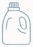
日用品 洗剤・紙製品など、毎日使う消耗品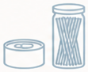
食料品 常備しておきたい食品や飲料困ったときにどうなるかを、ご契約前にお伝えできます。
レンタル期間中の自然故障は、無料で修理いたします。
お客様側の原因による破損・故障は、有料での修理となります。
安心保証オプション（月額税抜550円・任意）にご加入いただくと、お客様側の原因による故障も無料修理になります。
| 項目 | 扱い |
|---|---|
| 自然故障 | レンタル期間中は無料で修理 |
| お客様側の原因による破損・故障 | 有料 |
| 安心保証オプション（月額税抜550円・任意） | お客様側の原因による故障も無料修理 |
フィルターの費用は、月額に含まれています。
フィルターAは年1回、フィルターBは6か月ごとの交換です。年に合計3個のフィルターを、無料でご自宅へお届けします。
別途のご購入は必要ありません。
水分量の算出から飲水記録まで、さらに確認の手間やトラブル時のサポートまで行えるアプリです。
年齢・性別・身長・体重の4つの情報から、
必要な水分量の目安を算出します。
ワンタップで記録。グラフで表示し、
3時間記録がないと通知します。
エラーの内容と対処方法を、
取扱説明書を出さずに確認できます。
交換の時期がひと目で分かり、
追加のご注文もアプリからできます。
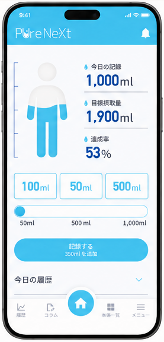
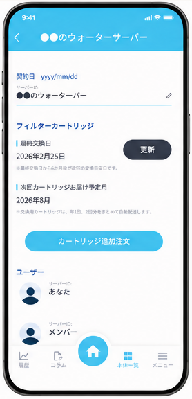
アプリ画面（開発中のもの）